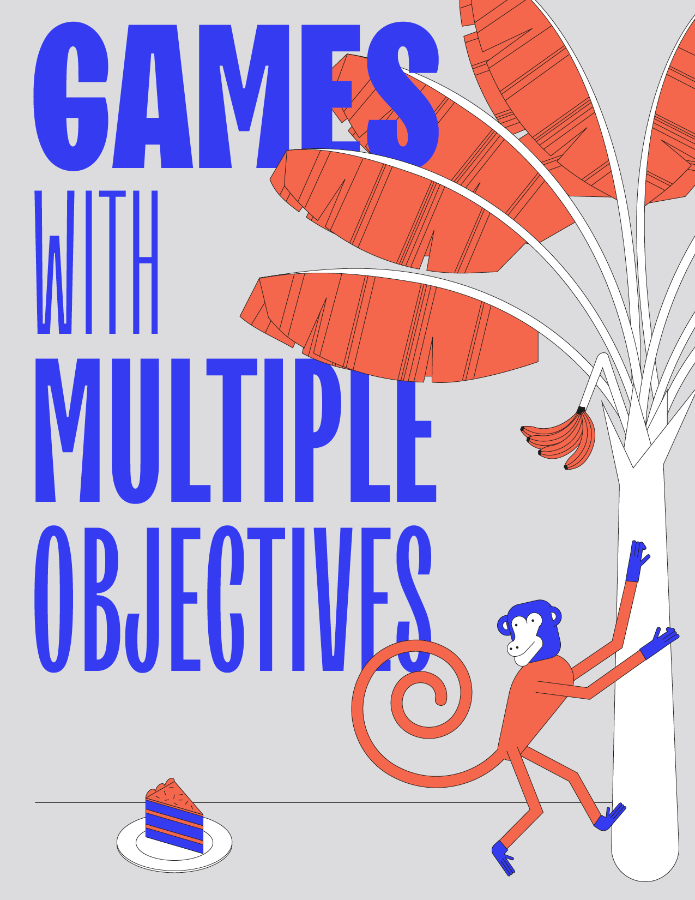

Games with multiple objectives¶
{kind=link}
Written by Mickael Randour
Up to this chapter, we have mostly been interested in finding strategies that achieve a single objective or optimise a single payoff function. Our goal here is to discuss what happens when one goes further and wants to build strategies that (i) ensure several objectives, or (ii) provide richer guarantees than the simple worst-case or expectation ones used respectively in zero-sum games and MDPs.
Consider case (i). Such requirements arise naturally in applications: for instance, one may want to define a trade-off between the performance of a system and its energy consumption. A model of choice for this is the natural multidimension extension of the games of Chapter Games with Payoffs, where we consider weight vectors on edges and combinations of objectives.
In case (ii), we base our study on stochastic models such as MDPs (Chapter Markov Decision Processes). We will notably present how to devise controllers that provide strong guarantees in a worst-case scenario while behaving efficiently on average (based on a stochastic model of its environment built through statistical observations); effectively reconciling the rational antagonistic behaviour of Adam, used in games, with the stochastic interpretation of uncontrollable interaction at the core of MDPs.
Stepping into the multiobjective world is like entering a jungle: the sights are amazing but the wildlife is overwhelming. Providing an exhaustive account of existing multiobjective models and the latest developments in their study is a task doomed to fail: simply consider the combinatorial explosion of all the possible combinations based on the already non-exhaustive set of games studied in the previous chapters. Hence, our goal here is to guide the reader through his first steps in the jungle, highlighting the specific dangers and challenges of the multiobjective landscape, and displaying some techniques to deal with them. To that end, we focus on models studied in Chapter Regular Games, Chapter Games with Payoffs, Chapter Markov Decision Processes and Chapter Games with Counters, and multiobjective settings that extend them. We favour simple, natural classes of problems, that already suffice to grasp the cornerstones of multiobjective reasoning.
Chapter outline
In Section 12-sec:multiple_dimensions, we illustrate the additional complexity of multiobjective games and how relations between different classes of games that hold in the single objective case often break as soon as we consider combinations of objectives.
The next two sections are devoted to the simplest form of multiobjective games: games with conjunctions of classical objectives. In Section Mean-payoff and energy, we present the classical case of multidimension mean-payoff and energy games, which preserve relatively nice properties with regard to their single-objective counterparts. In Section Total-payoff and shortest path, we discuss the opposite situation of total-payoff and shortest path games: their nice single-objective behaviour vanishes here.
In the last two sections, we explore a different meaning of multiobjective through so-called rich behavioural models. Our quest here is to find strategies that provide several types of guarantees, of different nature, for the same quantitative objective. In Section Beyond worst-case synthesis, we address the problem of beyond worst-case synthesis, which combines the rational antagonistic interpretation of two-player zero-sum games with the stochastic nature of MDPs. We will study the mean-payoff setting and see how to construct strategies that ensure a strict worst-case constraint while providing the highest expected value possible. In Section Percentile queries, we briefly present percentile queries, which extend probability threshold problems in MDPs to their multidimension counterparts. \todo{Check what I do exactly.} Interestingly, randomized strategies become needed in this context, whereas up to Section Percentile queries, we only consider deterministic strategies as they suffice.
We close the chapter with the usual bibliographic discussion and pointers towards some of the many recent advances in multiobjective reasoning.